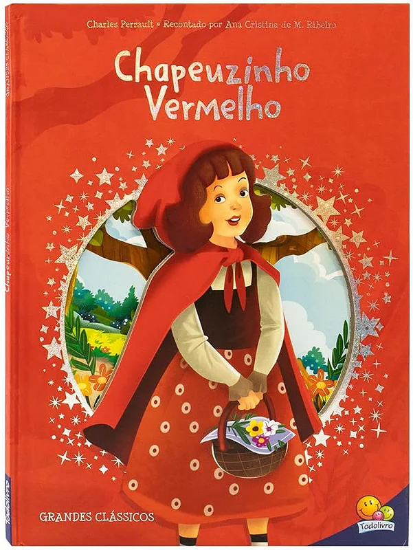

Chapeizinho vermelho
Voltar
Chapeuzinho Vermelho é uma menina que vai até a casa da avó levando comida. Pelo caminho, ela encontra um lobo que a engana, sugerindo que ela se desvie para colher flores enquanto ele vai direto à casa da avó. O lobo devora a avó, se disfarça dela e espera pela menina. Quando Chapeuzinho chega, percebe que a "avó" está estranha e pergunta sobre suas características. O lobo revela sua intenção e a devora. Em algumas versões, um caçador aparece, salva a menina e a avó, matando o lobo.
